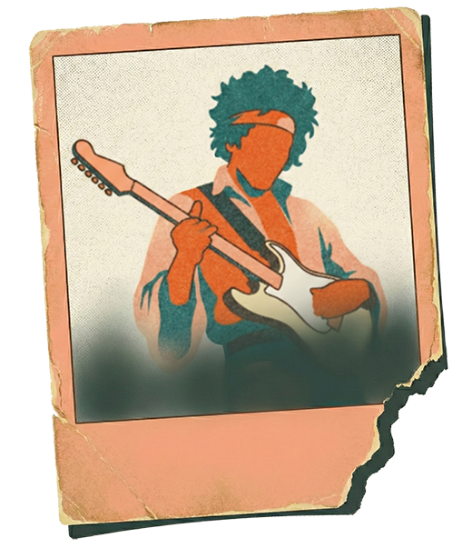

The Lore Layer
Defining Cultural Durability in Instruments
By Mariano Rozanski
December 11, 2025
The Lore Layer is a verifiable, digital record of an instrument's cultural history that ensures provenance survives market transactions.
The Problem No One Has Solved

The guitar world—especially the vintage, collectible, and historically significant end of the spectrum—suffers from a structural problem it rarely names directly:
Objects have rich cultural stories, but the stories are fragmented, unverified, or lost.
A 1959 Les Paul might carry sixty years of ownership, repairs, modifications, recordings, and stage appearances. Yet when it changes hands, much of that history evaporates. The next owner inherits an instrument and, if they're lucky, a folder of photographs and a handshake story.
Joe Bonamassa has said, in effect, that he buys the stories—the guitars just come along for free. He's not being poetic. He's describing how value actually works at the top of the market. The instrument is the vessel. The story is the asset.
But stories, unlike instruments, have no standard container. No format. No verification layer. No durable home.
We have marketplaces that answer where to buy. We have forums that answer where to discuss. We lack infrastructure that answers where to verify.
This gap has a name. Marc Johnson, Chief Guitar Curator of The Jim Irsay Collection, has observed that many supposed "star guitars" trade on narrative and a single murky photograph rather than hard evidence. The internal joke, he notes, is that these instruments always come with a great story—and a very blurry photo.
The Blurry Polaroid Problem is the industry's reliance on fragile, unverifiable oral history to support high-value assets.
This isn't cynicism. It's an accurate description of how provenance currently works. Oral tradition. Secondhand accounts. A paper trail that thins at every transaction.
The art world solved this problem generations ago. Auction houses like Christie's and Sotheby's enforce rigorous documentation standards. Scholars maintain the catalogue raisonné—a comprehensive, authoritative record of an artist's complete body of work. Provenance gaps raise red flags. Gaps in documentation lower prices.
Guitars have no equivalent infrastructure.
The result is predictable: fraud passes the sniff test, legitimate history gets lost, and real people lose real money. Small dealers, working musicians, and independent builders bear the cost of a system that has no shared standard for proof.
Two Worlds, One Problem
The guitar space contains two distinct buyer populations that operate on different cultural logic:
The high-end collector seeks status, myth, and asset appreciation. This is the buyer of the $4.5 million Kurt Cobain Mustang, the kind of guitar that ends up in a museum or a Christie's auction catalog. For this buyer, the guitar is functionally an art asset. Scarcity and celebrity provenance drive value. The story is the product.
The informed enthusiast, the serious player. The working musician, the luthier, the player-grade collector, they seek truth, history, and a clear chain of ownership. This buyer wants to know who built the instrument, who played it, was it refretted, and whether the story holds up. Accuracy matters more than myth.
These groups appear to want different things. But they share one need: verified, durable, well-organized instrument lore.
The collector needs verification to protect a seven-figure asset. The enthusiast needs verification to distinguish real history from marketing copy.
The Lore Layer serves them all with a single source of truth. A single provenance standard serves collectors, players, builders, and dealers alike.
What a Lore Layer Requires
A functional Lore Layer for instruments must satisfy three requirements:
Durable: The record must survive beyond any single owner, platform, or transaction.
A provenance story locked in a defunct forum thread or a seller's private notes is not durable. It must persist independently.
Verifiable: The record must be backed by evidence, not hearsay.
Photographs, recordings, documents, expert attestation—claims without proof are mythology, not provenance.
Standardized: The format must be brand-agnostic and goal-agnostic.
It must work equally well for a 1959 Burst, a modern boutique build, a repaired player-grade vintage piece, and a custom shop limited run. Fragmentation by brand or era defeats the purpose.
There is no industry-wide standard for documenting guitar provenance.
The Economic Stakes
Provenance is not sentimental. It is economic.
When an instrument's story cannot be reliably transferred, value leaks at every transaction. The seller cannot capture the full worth of what they're selling. The buyer cannot trust what they're buying. The market operates on friction and uncertainty.
This dynamic favors fraud and punishes diligence.
Consider the inverse: when provenance is well-documented and publicly visible, value compounds. Each owner, each recording, each visible performance adds to the cultural weight of the object. The chain of custody becomes an asset in itself.
The insight from adjacent markets is instructive. The art world has increasingly recognized that the archive is not separate from the marketplace—it underwrites the marketplace. As the essay "The Art Availability Layer" on 1of1.art argues, the most successful platform in five years may not be a marketplace at all, but an archive with a marketplace attached to it.
The same logic applies to guitars. The top-end guitar buyer is really an art buyer in disguise. The infrastructure should reflect that.
The Inversion of Value
We currently operate in a "Marketplace First" economy. We browse listings on Reverb or eBay, filtering by price and condition, hoping to find a story worth buying. Trust is secondary—a luxury we try to verify after we've already fallen in love with the photos.
The Lore Layer inverts this dynamic. By decoupling the instrument's history from the transaction, we move toward an "Archive First" economy.
In this model, value isn't established by a listing price, but by the density of verifiable history attached to the serial number. The future belongs to instruments that carry their own provenance—durable, digital, and portable—regardless of who owns them or where they are sold.
The art world has already proven this thesis: the most valuable assets are those with the clearest "oeuvre provenance." Guitars are next.
The dominant platform of the next decade won't be a store that tries to verify history; it will be an archive with commerce built on top.
When the archive becomes the source of truth, the marketplace becomes just a feature.
What This Means
Objects become culturally durable when their stories are preserved, published, and verified. Everything else is entropy.
The Lore Layer is the missing substrate: a place where lore can be recorded, verified, and made accessible across transactions, owners, and generations.
This is not a feature. It is infrastructure.
To see how cultural durability functions in practice—how unbroken provenance transforms a £100 used guitar into a multi-million-dollar artifact—read our case study: Greeny: When Provenance Works.
Related concepts: Provenance · Chain of custody · Cultural capital · Archival entropy · Catalogue raisonné
Sources:
Marc Johnson, Chief Guitar Curator of The Jim Irsay Collection
The Art Availability Layer – 1of1.art